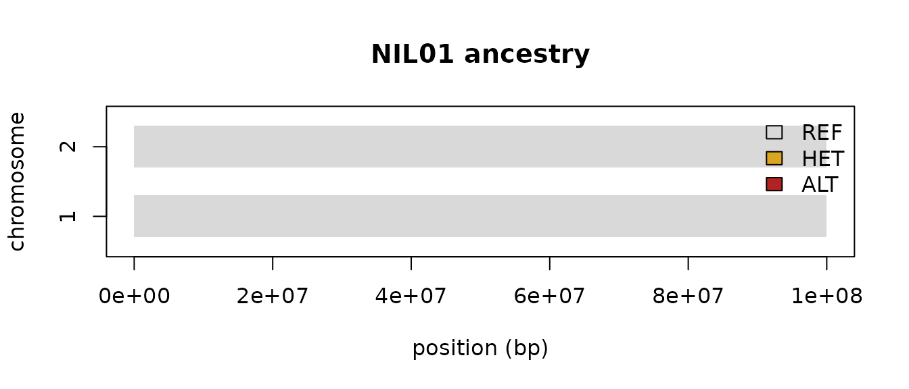

nilHMM calls ancestry — donor introgressions — in
Near-Isogenic Lines and related backcross/full-sib populations from
sequencing data. Under the hood it is a single duration-aware
3-state (REF / HET / ALT) HMM engine with two swappable axes
(emission × duration); their combinations, plus breeding-design priors,
express a family of named callers (nnil,
rtiger, binhmm, atlas,
lbimpute, fsfhap). This vignette covers the
common workflow; see vignette("callers") to choose a
caller, vignette("engine") for the internals, and
vignette("fsfhap") for full-sib families.
The one-verb API
Everything funnels through a single call:
call_ancestry(data, caller = ..., design = ..., ...)data is a tidy long table the readers produce;
caller picks the model; design supplies the
breeding-design priors. The package is data-agnostic —
functions take (data, params) and never touch file paths,
so you own where data comes from and where results go.
A worked example
We need an observation table. In practice you read one with
read_counts() (a chr pos ref n_ref alt n_alt
TSV or a directory of them), read_vcf_gt(),
read_hapmap(), or read_plink(). Here we
simulate a small cohort with simcross
(real meiosis and recombination on a genetic map) and then layer allelic
read counts on top — so the introgression blocks come from genuine
crossovers rather than hand-placed segments. We build a BC2S2 cohort
(two backcrosses, two selfings): six lines, two chromosomes.
library(simcross)
# simulate one BC(nbc)S(nself) family and layer read counts. Chromosomes assort
# independently, so we simulate each separately. Returns a long observation table
# with allelic counts (n_ref/n_alt) and a hard genotype g in {0 REF,1 HET,2 ALT,3 NA}.
sim_cohort <- function(n = 6L, m = 150L, n_chr = 2L, L = 100,
nbc = 2L, nself = 2L, depth = 6, err = 0.01, miss = 0.05) {
rec <- create_parent(L, 1); don <- create_parent(L, 2) # inbred recurrent / donor
one_line <- function() {
ind <- cross(rec, don) # F1
for (b in seq_len(nbc)) ind <- cross(ind, rec) # backcross to recurrent
for (s in seq_len(nself)) ind <- cross(ind, ind) # selfing
ind
}
map <- seq(0, L, length.out = m)
do.call(rbind, lapply(seq_len(n_chr), function(ch) {
g <- as.vector(convert2geno(lapply(seq_len(n), function(i) one_line()), map)) - 1L
N <- length(g); p_alt <- c(err, 0.5, 1 - err)[g + 1L]
d <- rpois(N, depth); na <- rbinom(N, d, p_alt)
g_obs <- g; g_obs[d == 0L | runif(N) < miss] <- 3L
data.frame(name = rep(sprintf("NIL%02d", seq_len(n)), times = m),
chr = ch, pos = rep(as.integer(map * 1e6), each = n),
n_ref = d - na, n_alt = na, g = as.integer(g_obs))
}))
}
cohort <- sim_cohort()
counts <- cohort[, c("name", "chr", "pos", "n_ref", "n_alt")]
head(counts)
#> name chr pos n_ref n_alt
#> 1 NIL01 1 0 7 0
#> 2 NIL02 1 0 7 0
#> 3 NIL03 1 0 8 0
#> 4 NIL04 1 0 3 0
#> 5 NIL05 1 0 3 0
#> 6 NIL06 1 0 4 0Call ancestry with the nnil count caller and BC2S2
design priors:
calls <- call_ancestry(counts, caller = "nnil", design = "BC2S2",
rrate = 1e-4, err = 0.01)
head(calls)
#> source donor name chr start_bp end_bp state
#> 1 nilHMM <NA> NIL01 1 0 100000000 0
#> 2 nilHMM <NA> NIL01 2 0 100000000 0
#> 3 nilHMM <NA> NIL02 1 0 57718120 0
#> 4 nilHMM <NA> NIL02 1 58389261 91946308 1
#> 5 nilHMM <NA> NIL02 1 92617449 100000000 0
#> 6 nilHMM <NA> NIL02 2 0 100000000 0The common segment schema
Every caller returns the same tidy segment table, so results are directly comparable across callers and populations:
| column | meaning |
|---|---|
source |
free label for the run/method |
donor |
donor/taxon label (per line if the input carries one) |
name |
sample identifier |
chr |
chromosome |
start_bp, end_bp
|
segment bounds (bp) |
state |
REF (0, recurrent hom), HET (1), or
ALT (2, donor hom) |
table(calls$state)
#>
#> 0 1 2
#> 16 3 2Numeric states are 0 = REF, 1 = HET,
2 = ALT. A quick karyotype-style view of one line’s
introgressions (base graphics, no extra packages):
one <- calls[calls$name == "NIL01", ]
cols <- c("0" = "grey85", "1" = "goldenrod", "2" = "firebrick")
plot(NA, xlim = c(0, max(one$end_bp)), ylim = c(0.5, max(one$chr) + 0.5),
xlab = "position (bp)", ylab = "chromosome", yaxt = "n",
main = "NIL01 ancestry")
axis(2, at = sort(unique(one$chr)))
with(one, rect(start_bp, chr - 0.3, end_bp, chr + 0.3,
col = cols[as.character(state)], border = NA))
legend("topright", fill = cols, legend = c("REF", "HET", "ALT"), bty = "n")
Which caller?
All callers share the REF/HET/ALT chain and the design priors; they differ in the emission model, the duration prior, and the input they expect.
| caller | input | when |
|---|---|---|
nnil |
allelic counts, or called GT
|
general-purpose NILs (low-cov skim or saturated GT) |
rtiger |
allelic counts | minimum-run-length (rigidity) segmentation |
binhmm |
allelic counts | per-bin calling for noisy/uneven coverage |
atlas |
recurrent/donor counts | competitive-alignment RNA-seq (GOOGA) |
lbimpute |
very low-cov counts (<1×) | GBS/skim imputation (LB-Impute) |
fsfhap |
called GT + a family
|
full-sib families (TASSEL FSFHap) |
vignette("callers") gives a runnable example for
each.
Next steps
-
Choosing and comparing callers:
vignette("callers") -
The engine (emission × duration, custom callers):
vignette("engine") -
Full-sib families (HapMap/pedigree → fsfhap):
vignette("fsfhap") - Function reference:
?call_ancestry,?read_counts,?to_segments. ```